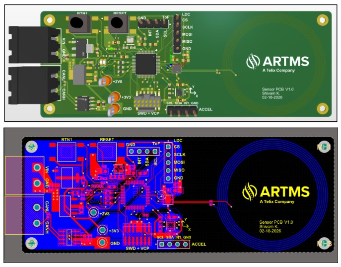
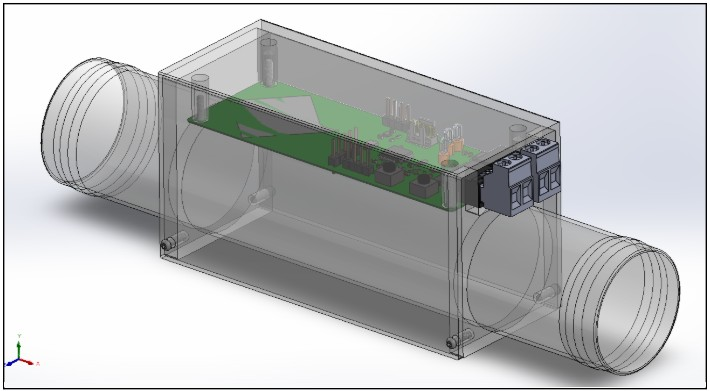
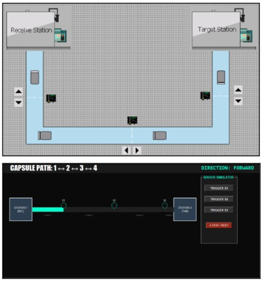
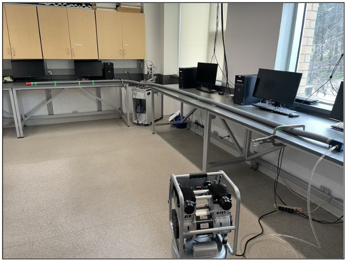
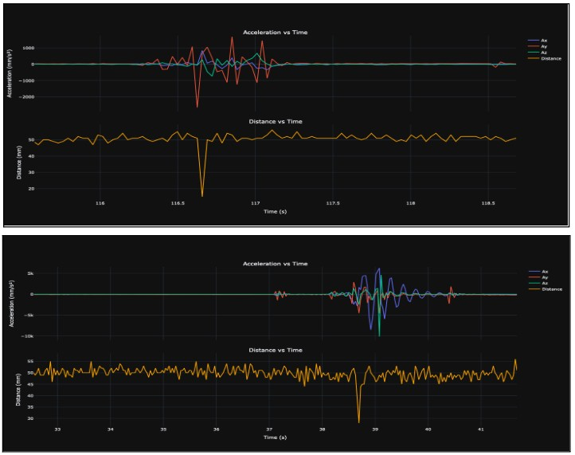

The Story
Project Entry
ARTMS Target Detection & Feedback System
For my Capstone project, I made a tracking system to monitor radioactive capsules travelling inside radiation-shielded transport lines. The objective was clear; to give operators real-time positional feedback of the capsule and detect if its gets jammed.
Who
Our client, ARTMS, is a pharmaceutical company that makes nuclear medicine products. They specialise in making radioisotopes for medical imaging such as Gallium-68, Copper-64, Zirconium-89 etc.
What
To isolate radiation exposure, the radioactive target is mounted on a capsule and transported a safe distance away in a pneumatic transfer hose. This creates 2 main operational problems: no real-time capsule detection, and the possibility of capsule jamming.
How
We started by defining the problem scope, mapping contraints, generating competing concepts, and weighing them against set performance criteria. The final solution was designed, prototyped and validated using a custom test jig.
Our Solution
Integrated Sensor Array System
The final solution was chosen to be an integrated array of sensors at various discrete checkpoints along the length of the transfer hose that would detect the capsule's passage in real-time and check if it got jammed at any location. Each checkpoint consists of a PCB with various sensors on it which relay information to the main PCB board.
A custom hose coupler was designed in-house to mount the sensor PCBs onto the hose. A Human-Machine Interface (HMI) was developed to recieve this information, process the data, and present it to the operator on the client's PLC software. Finally, a test jig was designed to validate the solution. It consists of 2 launch stations that act as a relay valve to take input from an air compressor and propel the capsule inside the hose.
Design Process
Electronic Component
Sensor PCB
The sensor PCB has 3 types of sensors to cover different weaknesses, reduce the rick of misleading readings, and provide redudancy. It uses an accelerometer, a Time-of-Flight (ToF) sensor, and an inductive sensor to detect the capsule.

Mechanical Component
Hose Coupler Assembly
The hose coupler assembly was made to serve 3 main functions. Namely, the join the spliced hose segments with no air leakage, to mount the sensor PCB onto the hose, and lastly to provide a clear transmission window for the ToF sensor to detect the capsule.

HMI Component
Siemens PLC-HMI
The graphical elements of the HMI are designed with safety and industry standards in mind. This group shows how the system output is presented to the operator. The usage of Siemens S7 1200 PLC alongside TIA portal was chosen to match hardware and software for client purposes.

Test Setup
Final prototype and evaluation
The test setup is designed to simulate the 80-110 PSI pneumatic environment found at ARTMS' Quantum Irradiation System (QIS) facility. The setup was configured in an elbow-bend to replicate real-life geometries. It combines mechanical coupling, sensing hardware, an interface PCB, and HMI to validate live capsule tracking using our solution.

Final Results
Final prototype and evaluation
The final test runs validated our designed solution by confirming that the sensor PCB is accurately sensing the capsule's passage. The graphs in Figure 5 show that both the accelerometer and ToF sensor detecting a spike in amplitude with minimal time delay.

Personal Contribution
What I was responsible for.
My main technical responsibility was the hose coupler that mounted the sensor PCBs on the transfer hose. I was also in charge of making technical drawings of all sub-components, reaching out to different vendors to get the best price and procuring machined components of our CAD models. In addition, as the Mech lead, I also assisted in other related roles such as developing & assembling the test setup to facilitate the detection of the capsule in motion through the sensors.
Additionally, I helped out with choreographing the multimedia production of the live test runs. Lastly, I will be representing my capstone group for the showcase event to defend our solution in front of judges, faculty, industry guests, and members of the public.
Non-Engineering Perspective
Why our solution matters.
When a capsule gets jammed, it leads to longer lead times for delivery. A patient needing radiotherapy has to wait, a researcher's study comes to a halt, and factories can't make downstream products. Our solution mitigates this crucial risk by minimising time taken to detect and clean up capsule jams.
Engineering Perspective
Why our solution matters.
Precision is everything in the nuclear industry. If the target capsule deviates a few millimetres after irradiation, it can result in uneven activation, lowering the purity and yield of the medicine. From a safety perspective, the golden rule in radiation environments is ALARA compliance (As Low As Reasonably Achievable). Positional feedback allows for remote handling, eliminating the need for human proximity.
Supporting Media